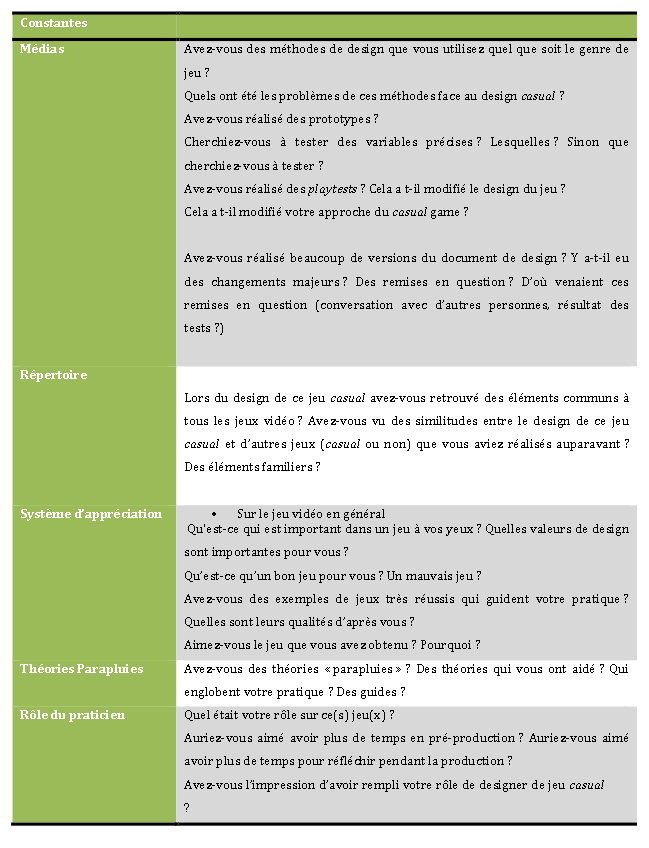
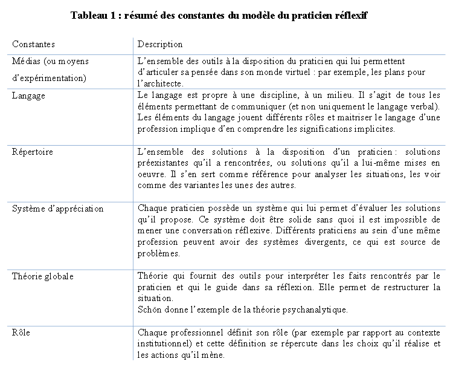

Les casual games : définition à l’aide du savoir professionnel des designers de jeu
Université de Montréal
The objective of this study is to use Donald Schön's model of the reflective practitioner to shed a new light on casual games through the collection of professional knowledge of game designers.
4.1 Approche qualitative
4.2.4 Protocole des entrevues
L ’entrevue semi-dirigée est un mode de collecte de données qui permet d’accéder au savoir professionnel des designers tout en étant aisé à mettre en œuvre.
L’échantillonnage a été réalisé en fonction du but de notre recherche
nous avons invité neufs participants, et six ont répondu.
demandé aux designers de réfléchir à leur pratique
[Pratique réflective]
Les designers ont réfléchient à leur pratique
In the sensitizing phase, participants perform a series of small exercises designed to let them think about past experience, and make them ‘reflective practitioners’ (F.S. Visser et al., 2005; Schön, 1983).
-------------
Résumé
--------------
CONTEXTE : l’industrie vidéoludique
Dans l’industrie vidéoludique, le causual game est peu étudié et ...
Les quelques définitions scientifiques recensées présentent des divergences importantes,
Mots-clés : Design de jeux, jeu casual, designer de jeu, praticien réflexif, savoir professionnel, challenge
Objectives ?
This study provides insight into the role of casual game designers and the context of their work, which can help explain the often negative perception of casual games.
1.4 Objectifs de la recherche
dépasser la vision étriquée
Dépasser la dimension purement économique
enrayer certains phénomènes néfastes comme celui du clonage
valoriser le casual game
Annexe 6 : précisions sur le codage avec les éléments du modèle du praticien réflexif
Codes / analyze
Recadrage
Évaluation
Moyen d’expérimentation
Solution de design
Solution de design issue d’un précédent
Système d’appréciation
Rôle du praticien
En tentant de répondre à la question « qu’est-ce qu’un jeu casual ? »,
4.2.2 Comment collecter le savoir professionnel ?
3.2 Le modèle du praticien réflexif
Le modèle du praticien réflexif découle de l’épistémologie de la pratique prônée par Schön. Ce modèle est caractérisé par la réflexion en cours d’action qui comporte une structure commune à toutes les professions ainsi que des constantes particulières à chaque domaine.
3.2.1 Structure du modèle du praticien réflexif
La réflexion en cours action comprend quatre étapes: la description de la situation, le recadrage, l’action et l’évaluation :
----------------------------------------------------------
6.3 Limites du modèle du praticien réflexif
----------------------------------------------------------
------------------------------------------
4.4 Validité de la recherche
La véritable question que doit se poser le chercheur concerne la façon dont sa présence et son expérience interfèrentavec l’étude Creswell, 2007
------------------------------------------

4.2.3 L’entrevue semi-dirigée
3.2.3 Limites de la réflexion en cours d’action
Tableau 1 : r ésumé des constantes du modèle du praticien réflexif

-------------------------------
4. Méthodologie
--------------------------------
L’approche qualitative
épistémologie post-rationaliste
3. Un modèle du design
------------------------------------
According to the design model for studying the casual game, Schon model of reflection in action was prefered to one of Technical Rationality which would have not been suited for such qualitative study of this type of epistemology. A reflection on the design action was induced using a booklet to sensitize the designer on their practice.
Notre guide d’entretien a été soigneusement préparé afin de répondre aux exigences d’une recherche inspirée de la phénoménologie tout en permettant la collecte du savoir professionnel.
garantir l’anonymat de nos participants.
#ethical
Nous avons constaté que les participants ayant rempli le livret peu de temps avant l’entrevue (quelques jours) semblaient plus à même de détailler leur pratique, en donnant de nombreux exemples concrets (qu’ils avaient notés dans le livret). Les participants ayant rempli le livret plusieurs semaines avant l’entrevue avaient déjà en partie oublié ce qu’ils y avaient noté et mettaient plus de temps à rassembler leurs souvenirs. Certaines entrevues ont donc été plus prolifiques que d’autres.
#metho #sensitizationbooklet
, Maxwell identifie le rôle des biais propres au chercheur. O
vérifier la validité de notre analyse, nous avons eu recours à une procédure de contrôle par les membres